List of test images
Currently, the table below does not contain Note section. For more infomation about their metadata, see metadata.yml
| Image | Name | Color | Size | Note |
|---|---|---|---|---|
| 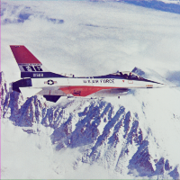 | airplaneF16.tiff | RGB{N0f8} | (512, 512) | |
autumn_leaves.png | RGBA{N0f16} | (105, 140) | ||
| 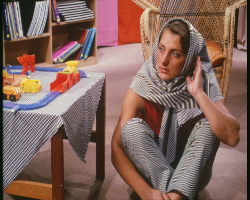 | barbara_color.png | RGB{N0f8} | (576, 720) | |
barbara_gray_512.bmp | RGB{N0f8} | (512, 512) | ||
| 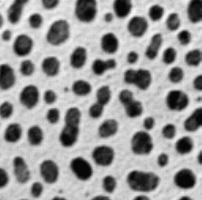 | blobs.gif | RGB{N0f8} | (254, 256) | |
cameraman.tif | Gray{N0f8} | (512, 512) | ||
| 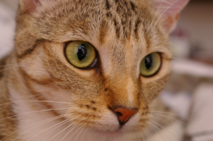 | chelsea.png | RGB{N0f8} | (300, 451) | |
coffee.png | RGB{N0f8} | (400, 600) | ||
| 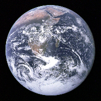 | earth_apollo17.jpg | RGB{N0f8} | (3002, 3000) | |
fabio_color_256.png | RGB{N0f8} | (256, 256) | ||
fabio_color_512.png | RGB{N0f8} | (512, 512) | ||
fabio_gray_256.png | Gray{N0f8} | (256, 256) | ||
fabio_gray_512.png | Gray{N0f8} | (512, 512) | ||
hela-cells.tif | RGB{N0f16} | (512, 672) | ||
| 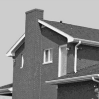 | house.tif | GrayA{N0f8} | (512, 512) | |
jetplane.tif | GrayA{N0f8} | (512, 512) | ||
| 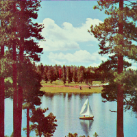 | lake_color.tif | RGB{N0f8} | (512, 512) | |
lake_gray.tif | GrayA{N0f8} | (512, 512) | ||
| 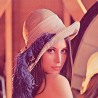 | lena_color_256.tif | RGB{N0f8} | (256, 256) | |
 | lena_color_512.tif | RGB{N0f8} | (512, 512) | |
lena_gray_16bit.png | Gray{N0f16} | (256, 256) | ||
lena_gray_256.tif | Gray{N0f8} | (256, 256) | ||
lena_gray_512.tif | Gray{N0f8} | (512, 512) | ||
lighthouse.png | RGB{N0f8} | (512, 768) | ||
livingroom.tif | Gray{N0f8} | (512, 512) | ||
| 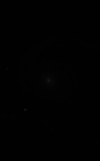 | m51.tif | Gray{N0f16} | (510, 320) | |
| 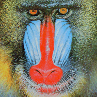 | mandril_color.tif | RGB{N0f8} | (512, 512) | |
| 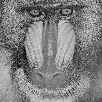 | mandril_gray.tif | Gray{N0f8} | (512, 512) | |
| 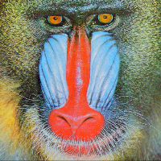 | mandrill.tiff | RGB{N0f8} | (512, 512) | |
| 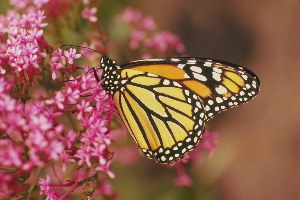 | monarch_color.png | RGB{N0f8} | (512, 768) | |
| 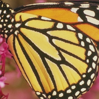 | monarch_color_256.png | RGB{N0f8} | (256, 256) | |
| 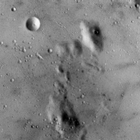 | moonsurface.tiff | Gray{N0f8} | (256, 256) | |
| 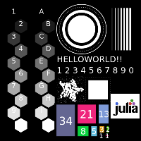 | morphology_test_512.tiff | RGB{N0f8} | (512, 512) | |
| 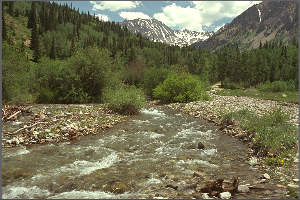 | mountainstream.png | RGB{N0f8} | (512, 768) | |
| 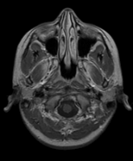 | mri-stack.tif | Gray{N0f8} | (226, 186, 27) | |
| 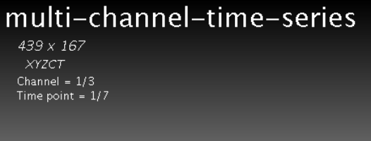 | multi-channel-time-series.ome.tif | Gray{N0f8} | (167, 439, 3, 7) | |
| 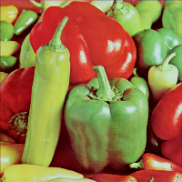 | peppers_color.tif | RGB{N0f8} | (512, 512) | |
peppers_gray.tif | GrayA{N0f8} | (512, 512) | ||
| 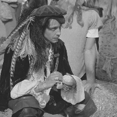 | pirate.tif | Gray{N0f8} | (512, 512) | |
| 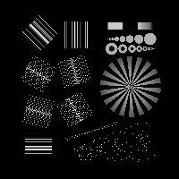 | resolution_test_1920.tif | Gray{N0f8} | (1920, 1920) | |
| 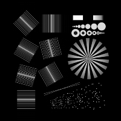 | resolution_test_512.tif | Gray{N0f8} | (512, 512) | |
simple_3d_ball.tif | Gray{N0f8} | (64, 64, 64) | ||
simple_3d_psf.tif | Gray{N0f8} | (64, 64, 64) | ||
| 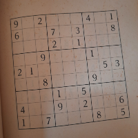 | sudoku.tiff | RGB{N0f8} | (512, 512) | |
toucan.png | RGBA{N0f8} | (150, 162) | ||
| 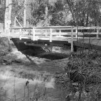 | walkbridge.tif | GrayA{N0f8} | (512, 512) | |
woman_blonde.tif | Gray{N0f8} | (512, 512) | ||
woman_darkhair.tif | Gray{N0f8} | (512, 512) |
{kind=link}
{kind=link}
{kind=link}
{kind=link}
{kind=link}
{kind=link}
{kind=link}
{kind=link}
{kind=link}
{kind=link}
{kind=link}
{kind=link}
{kind=link}
{kind=link}
{kind=link}
{kind=link}
{kind=link}